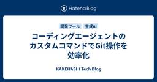
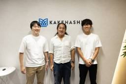

KAKEHASHI Tech Blog
https://kakehashi-dev.hatenablog.com/
カケハシのEngineer Teamによるブログです。
フィード

コーディングエージェントのカスタムコマンドでGit操作を効率化 8
8
KAKEHASHI Tech Blog
こんにちは、椎葉です。カケハシでVPoT(VP of Technology)をやっています。今日は、僕が使っているCursorのカスタムコマンドを2つ紹介します。 カケハシではコーディングエージェントとして、Cursor、Claude Code、GitHub Copilot、そしてDevinを利用できます。その中で僕はメインではCursorを使用しています。最近だと、Cursorを使ってTerraformによるAWSのインフラ構築をやっていて、便利だなーと思っています。 そんな日々の作業の中で、コミットとプルリクエストの作成をよく実施しているので、その2つをCursorのカスタムコマンドとして…
3日前

患者価値に突き進み、新たな事業の可能性を切り拓く。新規サービスチームの最高に幸せな日々 2
KAKEHASHI Tech Blog
カケハシの主力プロダクトといえば、クラウド型電子薬歴『Musubi』。現在、『Musubi』を活用した新たなビジネスの立ち上げがハイスピードで進んでいます。 そのプロジェクトを担う「PE新規サービス開発チーム」から、プロダクトマネージャー（PdM）の糟野、エンジニアの荻野と種岡に話を聞きました。 患者さまに治療意識を高めていただくためのプロダクト開発とは？ プロダクトマネージャー・糟野 ──── まずは、「PE」とは何か、説明してもらえますか？ 糟野：PEとは、「Patient Engagement」の略称で、患者さん本人が自身の治療や健康維持に積極的に関わっていく姿勢を表した言葉です。 PE…
5日前

YAPC::Fukuoka 2025 協賛レポート
KAKEHASHI Tech Blog
カケハシで技術広報を担当している櫛井です。 カケハシは2025年11月14日(金)〜15日(土)に開催されたYAPC::Fukuoka 2025にて、Platinumスポンサーを務めました。また、休憩エリアにて本格コーヒーを提供するコーヒースポンサーも実施いたしました。 yapcjapan.org こちらのエントリでは、当日の会場での様子をご紹介いたします。 カケハシが実施したスポンサー カケハシはPlatinumスポンサーとしてブースを出展し、薬局向けに展開しているクラウド型電子薬歴「Musubi」や医薬品在庫管理・発注システム「Musubi AI在庫管理」をご紹介しました。また、今回のイベ…
9日前
CodeRabbitとDevinを使ったコードレビューと自動修正のワークフロー
KAKEHASHI Tech Blog
こんにちは、カケハシのAI在庫管理チームでバックエンドエンジニアをしている今江です。 今回は、CodeRabbitの導入検証中に調査したDevinとの連携方法についてご紹介します。 CodeRabbitは、AIがプルリクエスト(PR)を解析し、コードの改善点やバグの可能性を自動で指摘してくれるツールです。 Devinは、AIが自律的にコードを生成・修正するツールです。PRの作成はもちろん、PR上のレビューコメントに反応して修正作業まで実行してくれます。 PRをレビューしてコメントしてくれるCodeRabbitと、PRのコメントに反応して修正してくれるDevinを連携させることで、自律的にPRの…
10日前
TypeScriptの宣言的な配列操作 - ビジネスロジックを明確にする
KAKEHASHI Tech Blog
はじめに こんにちは、kosuiこと岩佐 幸翠(@kosui_me)です。カケハシで認証基盤・ライセンス基盤・組織階層基盤などのプラットフォームシステムを開発・運用する認証権限基盤チームのテックリードをしています。 LLMの登場以降、コードを自動生成することがかなり一般的になってきました。しかし、人間であれLLMであれ、コードの品質を維持するためにはコーディングスタイルの一貫性が重要です。例えば、配列操作ひとつをとっても、手続き的なスタイルと宣言的なスタイルが存在し、それぞれの選択がコードの可読性や保守性に影響を与えます。 この記事では、TypeScriptにおける配列操作の宣言的スタイルにつ…
11日前
CTOがEngineering Managerに期待する7つのこと
KAKEHASHI Tech Blog
こんにちは、カケハシのCTOのゆのん(id:yunon_phys)です。カケハシではEngineering Manager（EM）に期待することを、特にリーダーシップとチームマネジメントの側面にフォーカスして言語化し、行動や言動に対して組織全体として一貫性のあるようにしています。本記事では、その期待することを社外公開用にリライトしたものです。 組織によって文化や価値観は異なりますが、EMに求められる役割について一つの視点として参考にしていただければ幸いです。 1. 正しい方法で短期的な事業成果を追求する 「正しい」という言葉の定義はコンテキストによって変わりますが、ここでは誰かが理不尽な思いを…
17日前
社内SREゼミ_信頼性向上編での参考資料
KAKEHASHI Tech Blog
以下資料は先に実施したSREゼミ_信頼性向上編で利用したものです。Well Architected Frameworkの信頼性の柱、その補足資料として読み合わせに使ってください。 Well Architected Frameworkを読み解きながら、信頼性が高まる設計を学びます。 信頼性のほうがメインです。 特に信頼性を高めたい設計者、あとはWell Architected Frameworkを学びたいエンジニアが対象です。 目標: 背景を理解し、基礎技術力を向上させ、設計ポイントが他人に説明できるようになる コンテンツのありか ホワイトペーパー(日本語) どれくらい理解すべきか 一行一行, …
20日前
利用用途を広げるドキュメント設計で記載と管理を推進しよう(後編)
KAKEHASHI Tech Blog
こんにちは。カケハシで開発ディレクターの笹尾です。 前編の方針を踏まえ、ここからは具体の記載方針と運用に踏み込みます。 はじめに ドキュメント設計はアーキテクチャ設計と同義です。求められるのは、スケールと複雑性に耐える持続可能な設計です。 最初から完璧は狙いません。想定できない課題も多いため、『作る→使う→直す』のループで育てながら、変化を受け入れやすい設計を目指します。 本記事を通して、ドキュメント成長過程の楽しさに触れ、チームがドキュメントに触れ合う機会を作る参考になれば幸いです。 実際の記載方針を設計する 前編で定めた大まかなドキュメント設計の方針を、「どこに／どのフォーマットで／どんな…
23日前
HonoConf 2025 登壇・協賛レポート
KAKEHASHI Tech Blog
カケハシで技術広報を担当している櫛井です。 カケハシは2025年10月18日(土)に開催されたHono Conference 2025にて、Platinumスポンサーを務めました。また、カケハシのVPoT 椎葉がスポンサーセッションで発表いたしました。honoconf.dev こちらのエントリでは、当日の会場での様子やセッション資料の紹介をいたします。 カケハシが実施したスポンサー カケハシはPlatinumスポンサーとしてブースを出展し、薬局向けに展開しているクラウド型電子薬歴「Musubi」や医薬品在庫管理・発注システム「Musubi AI在庫管理」をご紹介しました。 技術広報の𝕏アカウン…
23日前
利用用途を広げるドキュメント設計で記載と管理を推進しよう(前編)
KAKEHASHI Tech Blog
こんにちは。カケハシで開発ディレクターをしている笹尾です。 『Musubi AI在庫管理開発チーム』での取り組みを例に、ドキュメント設計の重要性と実装の流れを紹介します。 内容が多岐に渡るため、前編・後編の2回に分けて解説します。 はじめに 最初に強調したいのは『ドキュメント設計はアーキテクチャ設計そのもの』だということです。 逆に言えば、ドキュメント設計が弱いチームは設計力も伸びにくいとも言えます。ところが実務では、ドキュメント設計に触れる機会が少なく、結果として「後回し」になりがちです。 本記事が、チームの設計力を底上げするヒントになれば幸いです。 目的志向で利用用途をとらえて広げる ドキ…
24日前
Zustand を使用して状態管理のテストを独立して行う方法を考える
KAKEHASHI Tech Blog
こんにちは、カケハシのAI在庫管理チームでフロントエンドエンジニアをしている江藤です。 AI在庫管理では複雑な依存関係を持ったフォームが数多く存在します。それらのコンポーネントの取りうる状態を網羅的にテストしようとすると組み合わせ数が膨大になり、React Testing Library（以下、RTL） を使う場合はモックの準備やレンダリングのコストが無視できないほど大きくなります。 また、レンダリング結果をアサーションする都合上、テストが失敗した際に状態管理ロジックがおかしいのか、コンポーネントの実装がおかしいのか切り分けが難しい場合があります。 今回はそのような場合に、AI在庫管理で検討し…
1ヶ月前
フルリモートでのオンボーディングを成功させる「仕組み」と「対話」
KAKEHASHI Tech Blog
はじめに こんにちは。Musubi機能開発チームでエンジニアをしている竹本です。 私はカケハシに入社して4ヶ月目ですが、すでにMusubiの依存ライブラリをいくつかアップデートしたり、 チーム横串の開発プロセス改善活動のリードとして活動させてもらえたりと、手前味噌ではありますがかなり良いペースでチームに溶け込めていけたのではないかと思っています。 カケハシは基本フルリモートの会社で、医療業界のことは何も分からんという状態で入社したので、オンボーディングには少なからず苦戦するだろうと予想していたのですが、 カケハシとMusubi機能開発チームのオンボーディングのおかげで、スムーズに初期のキャッチ…
1ヶ月前
EOL 管理入門（AWS、OSS ライブラリ、コンテナイメージ）
KAKEHASHI Tech Blog
「このライブラリのサポートいつまでだっけ？」「Lambda ランタイムの EOL っていつだったかな？」 システム運用をしていると、こんな疑問がよく浮かびますよね。サービス・ライブラリの EOL を皆さんはどうやって管理しているでしょうか。 なぜEOLチェックが重要なのか EOL（End of Life）を放置すると、セキュリティ・運用・ビジネスのリスクが高まります。 セキュリティ: サポート終了によりセキュリティパッチが止まり、新規脆弱性が修正されなくなる可能性があります。 運用: サポート切れでトラブル対応が困難になり、互換性やテストコストが増えます。 ビジネス: インシデントやサービス停…
1ヶ月前
医療システムだからこそ、徹底的に。カケハシの開発現場における生成AI活用の現在地
KAKEHASHI Tech Blog
生成AI研究開発チームのainoyaです。 カケハシでは、今年5月に、社内で「生成AI活用研究会」を発足し、業務における生成AI活用を推進してきました。 薬局DXをリードするカケハシは社内で生成AIをどのように活用しているのか? - KAKEHASHI Tech Blog 今回は、社内でのAI活用の具体的なアウトプットとしてのこれまでのブログ記事を紹介しながら、カケハシのAI活用の「現在地」をお伝えしたいと思います。 生成AI活用研究会の発足と目的 2025年の5月頃に発足したこの研究会は、単なる技術調査にとどまらず、「開発現場でいかに実践的にAIを活用し、ユーザーへの価値提供を加速させるか」…
1ヶ月前
ご家庭で実践できる、ドリップバッグコーヒー「カケハシブレンド」の美味しい淹れ方
KAKEHASHI Tech Blog
こちらはKAKEHASHI Tech Blogでございますが、技術イベントで配布するノベルティに関連する内容ということでご紹介をさせていただきます。カケハシは「日本の医療体験を、しなやかに。」をミッションに掲げ、患者さんのための薬局づくりのパートナーとして複合プロダクトで薬局DXをトータルサポートしているヘルステックスタートアップです。 ここ1年ほどはカンファレンスや勉強会などの技術イベントにおいて、「コーヒースポンサー」として高品質なコーヒーの提供を行っていることでも知られています。 今回は、カケハシがスポンサーする技術イベントのスポンサーブースでお配りするドリップバッグコーヒー「カケハシブ…
1ヶ月前
『Musubi AI 在庫管理開発チームの品質向上ハンドブック』の PDF版を公開します
KAKEHASHI Tech Blog
はじめに こんにちは。カケハシで開発ディレクターをしている笹尾です。 こちらの記事は『Musubi AI 在庫管理開発チームの品質向上ハンドブック』の PDF 版公開の記事となります。 (ダウンロードのリンクは記事の後半にあります) 今回公開するハンドブックはMusubi AI 在庫管理開発チームが日々のプロダクト開発・保守・運用の中で実際に利用・実践している取り組みをまとめたものです。一部にカケハシ特有の状況に基づいた記述もありますが具体的なプロダクト情報は最小限に留めて記載されています。 この中で私たちがどのように 「状態ゴール」 を意識し、アジャイルかつリーンに「フローを重視する」姿勢で…
1ヶ月前
最も価値のある仕事は、最も「泥臭い」。データサイエンティストが向き合うべきデータ整備のリアル
KAKEHASHI Tech Blog
はじめに こんにちは！データサイエンティストの川邊です。普段は医療・ヘルスケア領域の案件やSaaS利用促進に関わるデータドリブンな意思決定支援を行っています。 タイトルの通り、最近はデータユーザーの視点からアプローチするデータ整備に取り組んでいるのですが、はじめて上司から「データ整備やってみない？」と言われた時は、「・・・部署異動ですか？」と思ったくらい理解できていませんでした。0からキャッチアップしていく中で、データ整備で重要とされる「普段からデータを活用しているデータサイエンティストやアナリストが上流部分の設計や要件策定に携わることが必要」という考え方を知り、私自身もその必要性を強く感じる…
1ヶ月前
Findy Team Awards 受賞：プロセスを体感した感想と３年間の変遷
KAKEHASHI Tech Blog
こんにちは。AI 在庫管理の開発チームで開発ディレクターをしている笹尾とソフトウェアエンジニアをしている鳥海です。 先日、AI 在庫管理開発チームとして、3 年連続で Findy Team+ Award を受賞するに至りました。 これにあたり、開発プロセスに関するPDFの公開も予定しています。 そこで、今回はPDFの公開に先んじて、実際にこのプロセスを実施してみてどうなったかについてと今までの道筋についてのお話を、それぞれ前後半に分けて紹介していきたいと思います。 このプロセスを体験してどうなったか 前半部分では、開発メンバー自身が受賞したこのプロセスを実施することで、どういう気持ちになって、…
1ヶ月前
Databricks サーバレスコンピュート導入時の注意点、Tipsの紹介
KAKEHASHI Tech Blog
私たちのデータ基盤はDatabricks on AWSで構築されており、従来、Databricksのコンピュートクラスタは自社のAWSアカウント内のEC2インスタンス上で稼働していました。昨年、DatabricksのサーバレスコンピュートがGA（一般提供）となり、その迅速な起動時間やインフラ管理の簡素化という魅力から、今年の春頃から全社的な利用を開始しました。 しかし、導入を進める中で想定外のコスト増加という課題に直面しました。本記事では、このコスト問題をどのように分析し、解決したのか、また、検証の過程で得られたその他の導入上の注意点やTipsをデータプラットフォームエンジニアの目線でご紹介し…
2ヶ月前
Amazon ECR Docker Credential Helperを利用したECR認証
KAKEHASHI Tech Blog
docker loginによるコンテナレジストリログインの課題 Docker Clientから各種コンテナレジストリに認証するときは、通常docker loginコマンドを利用します。しかし、以下の課題があります。この記事ではこの課題に対応するDocker Credential Helperを紹介します。 ログインコマンドが複雑 認証トークンがローカルに保存される 一つ目はわかりやすいポイントです。例えばECRなら、以下のようにAWS CLIでDocker Client用の認証トークンを発行してログインしますが、見ての通りパラメータも長く、複雑です。 aws ecr get-login-pas…
2ヶ月前
チームとプロジェクトの変化を受けてスクラムイベントを見直した話
KAKEHASHI Tech Blog
はじめに こんにちは。認証・権限管理基盤チームでソフトウェアエンジニアをしている坂本です。 皆さんのチームでは、「昔はうまくいっていたはずの開発プロセスが、なぜか最近うまく回らない…」と感じることはありませんか？ 私たちのチームも、プロジェクトの進展とメンバーの拡大に伴い、かつて機能していたスクラムイベントがフィットしなくなるという課題に直面しました。 今回は、その課題を特定し、チームで対話しながらスクラムイベントの設計を見直した経験を共有します。私たちの試行錯誤が、同じような状況にいる方々の参考になれば幸いです。 チームとプロジェクトの移行期 私達のチームでは直近半年ほどで主に以下のような大…
2ヶ月前
機械学習エンジニアが「機械学習を使わない」選択をした理由
KAKEHASHI Tech Blog
はじめに こんにちは。機械学習エンジニアをしている藤本です。 「機械学習を使わないシンプルな方法に置き換えても良さそうだ」 これは、約4年間運用してきたMLモデルのパフォーマンスを初めて可視化した時の率直な感想です。この後、機械学習を使わないモデル(ナイーブモデル)への置き換えを検討することになります。 今回は、「顧客影響が出てからしか検知できない」という後手の対応から脱却し、モニタリング体制を構築するまでの道のりを共有します。技術的負債と向き合い、データに基づいたMLモデル廃止の意思決定に至るまでの経験が参考になればと思います。 チームとシステムが置かれていた状況 MLモデル導入当時の状況と…
2ヶ月前
スクラムガイドを読む前に知っておきたい基本の考え方
KAKEHASHI Tech Blog
こんにちは。処方箋データ連携チームのエンジニアリングマネージャーをしている吉田です。 普段はスクラムマスターとしてチーム開発に携わっており、スクラムを日常的に実践しています。 また、社内の「アジャイル研究会」にも参加しています。研究会では、アジャイルへの知見を深めたり、各現場のベストプラクティスを共有し合い、社内全体の開発をより良くしていくことを目的に活動しています。 この記事は、その活動の一環として「スクラムガイドを読む前に背景や前提を整理しておくと理解しやすいかもしれない」と感じたことをまとめたものです。 はじめに スクラムを導入したチームでよく耳にする悩みがあります。 スクラムガイドを読…
2ヶ月前
エンジニアが Professional Scrum Master を受けてみた
KAKEHASHI Tech Blog
処方箋データ連携チームでエンジニアをしている岩佐 (孝浩) です。 カケハシには「岩佐」さんが複数名在籍しており、社内では「わささん」と呼ばれています。 先日、Professional Scrum Master (PSM) I と II の認定試験を受験し、無事に合格することができました。 「エンジニアがなぜスクラムマスターの認定を？」と思われるかもしれませんが、この認定取得を通じて、日々の開発業務の見え方が変わりました。 本記事では、受験の動機から学習方法、試験の感想まで、エンジニアの視点から共有したいと思います。 なぜエンジニアがスクラムマスター認定を受けたのか 私が所属する処方箋データ連…
2ヶ月前
「大吉祥寺.pm 2025」と「フロントエンドカンファレンス北海道2025」に参加してきました！
KAKEHASHI Tech Blog
こんにちは。椎葉です。 9月6日（土）に武蔵野公会堂で開催された「大吉祥寺.pm 2025」へ参加してきました。楽しかったー。そして同僚の竹本さんと荻野さんは、同じ日に札幌で開催された「フロントエンドカンファレンス北海道2025」に参加していました。ということで今日は、竹本さんと荻野さんと一緒にこの記事を書きます！ ではまず私が参加した「大吉祥寺.pm 2025」についてご紹介します。 大吉祥寺.pm 2025 で癒やされました！ 「大吉祥寺.pm 2025に行きたいなー。でも大阪から行くのはちょっと遠いなー」と思っていたら、ちょうど社内Slackで @941 さんが「カンファレンス参加支援制…
3ヶ月前
不確実な新規事業開発に立ち向かう。生成AIによる高速プロトタイピングと「設計タイムライン」活用術
KAKEHASHI Tech Blog
こんにちは、患者向けサービス開発チームでエンジニアをしている種岡です。 カケハシでは社内で生成AIを活用した取り組みが活発に行われています。 生成AIは、もはや単なる効率化ツールではありません。ユーザーへ最速で価値を届けるための「強力な相棒」です。 本記事では生成AIを活用し、仕様検討からプロトタイプ作成までを高速で実現した事例を、具体的な手順を交えてご紹介します。 新規事業開発における３つの課題 所属しているチームは新規事業開発ということもあり、以下の課題に直面することが多いです。 変わりやすい要件 : 日々の情報収集で仕様が固まらず、開発着手のタイミングを見極めるのが難しい 技術課題へのリ…
3ヶ月前
SQLAlchemy でスロークエリの呼び出し元を追跡する
KAKEHASHI Tech Blog
こんにちは、AI在庫管理のバックエンドを担当している沖(@takuoki)です。 今回は、スロークエリの呼び出し元の追跡が難しいという問題について、実際に取り組んだ解決策をご紹介します。比較的シンプルなアプローチでしたが、開発体験の大幅な改善につながったので、同様の課題をお持ちの方の参考になれば嬉しいです。 課題：スロークエリの呼び出し元がわからない SQLAlchemy のイベントリスナーを用いた実装方法 バルクインサートで発生した問題 おわりに 課題：スロークエリの呼び出し元がわからない システムを運用していると、次のような状況に遭遇することがあります。 スロークエリの発生件数が増加し、調…
3ヶ月前
障害対応での生成AIの活用事例：社内向け障害報告書作成の自動化
KAKEHASHI Tech Blog
Pocket Musubi開発チームの開発ディレクター、松本です。 システムに障害はつきものです。カケハシでも時折障害が発生します。開発ディレクターの役割の一つとして、障害発生時の統制者（障害対応をリードする役割）を担います。 本記事では、統制者として、スピード感が求められる障害対応を少しでも効率化するために、「社内向け障害報告書の作成」を自動化した事例と、これから効率化していきたい部分について記載します。 カケハシの障害対応フローについて まず前提として、カケハシの障害対応フローを簡単にご説明します。 下図は、一部簡略化していますが、カケハシの障害対応フローです。 カケハシでは障害対応フロー…
3ヶ月前
Musubi AI在庫管理チームがFindy Team+ Award 2025にてBest Practice Awardを受賞しました
KAKEHASHI Tech Blog
技術広報の櫛井です。 カケハシの「Musubi AI在庫管理」開発チームがFindy Team+ Award 2025に3年連続で選出され、Best Practice Awardを受賞いたしました。 prtimes.jp こちらのエントリでは、Findy Team+ Award 2025授賞式の様子と当日発表させていただいたBest Practiceについてご紹介します。 授賞式の様子 カケハシのMusibi AI在庫管理チームの開発ディレクター笹尾・ソフトウェアエンジニアの鳥海が参加し、会場に用意された受賞者向け記念撮影用パネルを早速活用させていただきました。 授賞式では以下の3つの表彰区分…
3ヶ月前
日本の医療に本気で向き合う。認証・権限管理基盤チームの決意
KAKEHASHI Tech Blog
医療業界全体を支え、日本の未来を変えていく──。 そんな壮大なビジョンを掲げ、少数精鋭で取り組むスペシャリスト集団がカケハシの認証・権限管理基盤チームです。 今回は認証・権限管理基盤チームから、PdMの渡部桂太、エンジニアの岩佐幸翠に話を聞きました。チームの成り立ち、日々の業務といった基本的なお話から、認証・権限管理基盤チームが描く未来まで、広く、そして深く語りました。彼らの本気をぜひ感じてください。 認証・権限管理基盤チームの役割 認証・権限管理基盤チーム エンジニア 岩佐 幸翠 — まず認証・権限管理基盤チームが立ち上がった経緯から教えてください 岩佐：はい、創業時までさかのぼって説明しま…
3ヶ月前